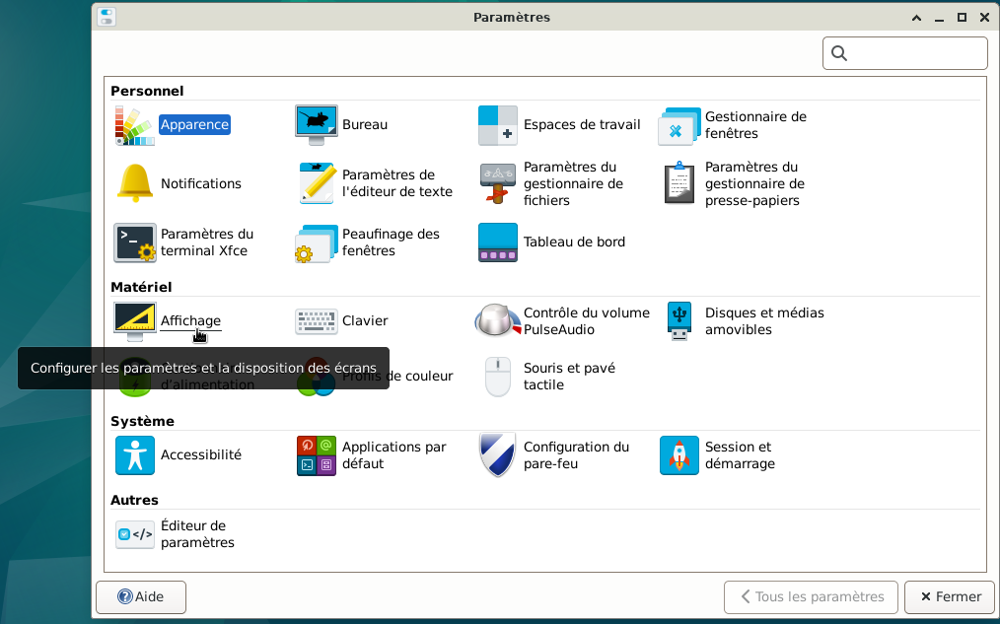
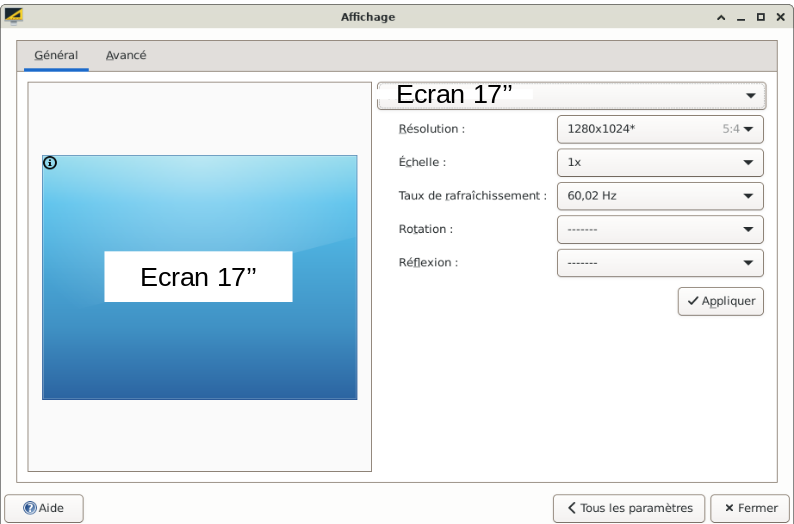
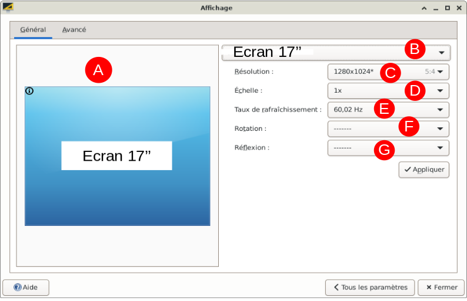
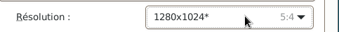
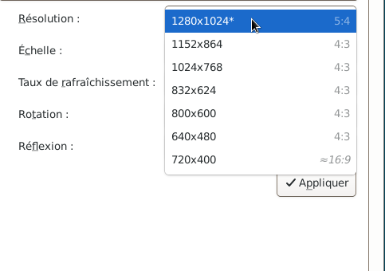
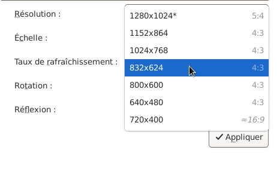
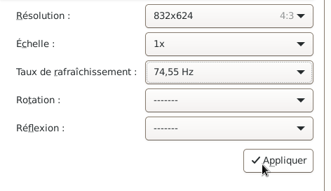
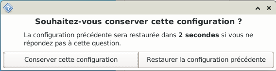
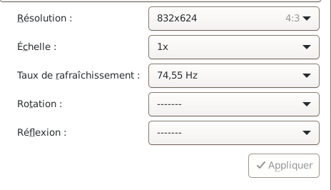
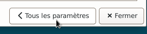

GLICD
Définir la résolution de l'écran :
le site Xfce.
Configurer les paramètres et la disposition des écrans
- Ouvrir le gestionnaire de paramètres
Simple clic > Applications > Paramètres > Gestionnaire de paramètres

- La fenêtre du gestionnaire de paramètres s'ouvre.

- Simple clic > Affichage
Notification : Configurer les paramètres et la disposition des écrans.

- La fenêtre « Affichage » s'ouvre sur l'onglet « Général » (souligné en bleu).

- La fenêtre « Affichage » se compose de 2 onglets :
- Général : Permet de paramétrer les écrans
- Avancé, non décrit ici.
- Sous l'onglet « Général » (souligné en bleu) se trouve en :
- L'indication du type d'écran
- Le choix de l'écran, si plusieurs écrans connectés
- Résolution de l'écran
- L'échelle
- Le taux de rafraîchissement
- Rotation de l'image
- Réflexion de l'image

- Pour changer la résolution de l'écran
Simple clic sur l'onglet à côté de « Résolution ».
Indiqué « C » sur l'image ci-dessus.

- Une liste déroulante apparaît.

- Exemple pour agrandir la résolution de l'écran :
Passer de la résolution 1280*1024 (petit affichage) à la résolution 832*624 (affichage plus grand)
Simple clic > 832*624

- Simple clic > Appliquer
La modification va s'effectuer.

- Une fenêtre apparaît avec la question suivante :
« Souhaitez-vous conserver cette configuration ? »
Le temps est de 10 secondes pour répondre à la question

- Si le choix est de conserver cette configuration alors simple clic > Conserver cette configuration
Si le choix est de ne pas conserver cette configuration alors simple clic > Restaurer la configuration précédente, ou ne rien faire, la configuration précédente sera restaurée.
- Si le choix est de conserver la résolution 832*624 alors dans l'onglet résolution il est indiqué 832*624
Le Taux de rafraîchissement a peut-être changé automatiquement, ici 74,55 Hz.

- Pour quitter la fenêtre d'affichage
Simple clic > Tous les paramètres
ou
Simple clic > Fermer


Retour
Informations sur le logiciel libre et
Merci.
Marques déposées :
Ce site ne fait pas partie de Debian, n'est pas produit par le projet
Debian, ni approuvé par le projet Debian.
Ce site n'est pas affilié à Debian. Debian est une marque déposée appartenant
à Software in the Public Interest, Inc.
Contribuer :
Ce site ne fait pas partie de XFCE, n'est pas produit par le projet
XFCE, ni approuvé par le projet XFCE.
Ce site n'est pas affilié à XFCE.
Ce site est juste réalisé par un passionné.